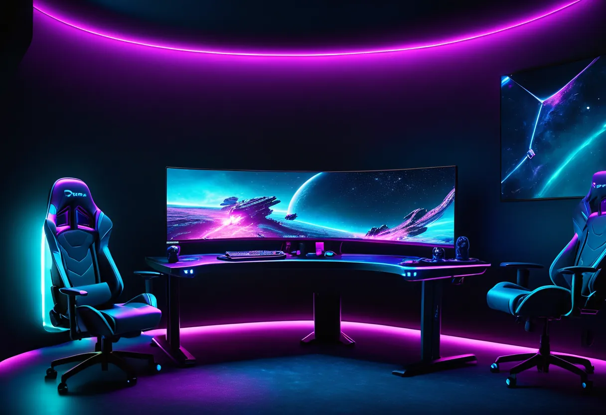

YOUR NEXT PLAY, ANYWHERE.
집에서 앉는
PC방 자리.
PC를 바꾸는 대신, 자리를 바꾸세요.
하던 게임 그대로,
매장의 고사양 PC를 내 화면에서.
처음이신가요? 이용 방법 확인하기
- 좌석별 사양 확인GPU부터 메모리까지
- 60 · 144프레임내 화면에 맞게 선택
- 최대 5개 좌석한 계정에서 함께 관리
- 이용 종료 후 초기화파일은 종료 전 별도 보관
PAY AS YOU PLAY필요한 만큼 충전하고,
요금 확인하기필요한 만큼 충전하고,
쓴 시간만큼 이용하세요.
원하는 만큼 포인트를 충전하고, 이용한 시간에 따라 차감됩니다.
충전 금액과 프레임별 상세 요금은 요금·충전 페이지에서 확인하세요.
GET READY TO PLAY
처음 이용하기내 화면에서, 이렇게 시작해요.
단계를 눌러 설치부터 접속까지 확인하세요.
READY FOR YOUR NEXT PLAY
내 PC에 접속기 준비하기
게임은 매장 PC에서 실행되고,
내 PC에는 게임 화면이 전달됩니다.
PLAY YOUR WAY
요금을 확인하고 충전하세요.
충전할 때필요한 만큼
이용할 때쓴 시간만큼 차감
요금·충전 페이지에서 충전 금액과 이용 시간을 확인하세요.
충전한 포인트는 선택한 프레임과 이용 시간에 따라 차감됩니다.
내 PC매장 PC · A-15

매장 PC의 화면을 내 PC로화면 구성 예시 · 실제 연결 아님실제 접속기 캡처가 아닌 이용 과정 설명용 예시입니다. 접속 품질은 네트워크 환경에 따라 달라집니다.
이용 종료 후 좌석은 초기화됩니다. 중요한 파일과 게임 저장 데이터는 종료 전에 별도로 보관하세요.
ONE INSTALLER. YOUR NEXT PLAY.
시작은 접속기 하나로.
내 PC에서, 내가 고른 자리로.
Windows 접속기Windows 10 / 11 전용
디자인 시안 · 설치 파일 준비 중
모든 게임을 이용할 수 있습니다. 접속기로 매장 PC에 연결한 뒤 평소 즐기던 게임을 실행하세요. 게임은 매장 PC에서 실행되고, 화면과 조작은 내 PC에서 이용합니다.
선택한 프레임과 이용 시간에 따라 포인트가 10분 단위로 먼저 차감됩니다. 충전 금액과 프레임별 상세 요금은 요금·충전 페이지에서 확인하세요.
Windows 10·11 접속기를 사용하는 구성입니다. 네트워크에 따라 품질이 달라질 수 있으며 유선 연결을 권장합니다.
좌석 이용 종료 후 초기화하는 구조입니다. 중요한 파일과 게임 저장 데이터는 이용을 마치기 전에 별도로 보관해 주세요.